BigSpace
Sistema que combina estética e robustez: visto pelo lado externo, o resultado se aproxima de uma pele de vidro contínua. Funciona em pares sobre um único trilho, permitindo projetos de até 10 metros de largura com abertura lateral, central ou pivotante.
1Tipologia e diferenciais
conteúdo consolidadoAbertura híbrida
O usuário escolhe onde empilhar o vidro, mesmo em vãos com formato "L" ou "U" — versatilidade total de layout.
Trilho único, vários vidros
Pares de folhas operam sobre um único trilho, permitindo vãos de até 10 metros de largura de forma prática.
Sem alumínio na vista frontal
Elegância visual: o perfil praticamente desaparece na composição frontal do envidraçamento.
Vedação ultra eficiente
Borracha e escovinhas em múltiplas barreiras — alta eficiência contra vento, chuva e sujeira.
Cremona e fecho-unha
Trava entre vidros que garante segurança total, mesmo em aplicações de alta exigência arquitetônica.
Trilho de alta resistência
Suporta passagem de carro sobre o trilho inferior — compatível com projetos que integram acesso veicular.
2Limites e dados técnicos
dados de campo confirmados| Parâmetro | Especificação |
|---|---|
| Largura máxima do vão | Sem limite |
| Altura máxima do vão | Até 4500mm (vidro 8 ou 10mm, conforme norma) |
| Quantidade de folhas | Sem limite (ideal até 7 pares por empilhamento) |
| Largura máxima da folha | 1200mm (ideal ~800mm) |
| Peso do vidro — 8mm | 20 kg/m² |
| Peso do vidro — 10mm | 25 kg/m² |
Dados necessários para orçamento
- Largura do vão
- Altura do vão
- Nº de folhas móveis e fixas
- Cor do vidro
- Cor do alumínio
3Perfis utilizados
Inclui perfis compartilhados com a categoria pele de vidro. Fichas individuais na biblioteca de perfis.18 perfis
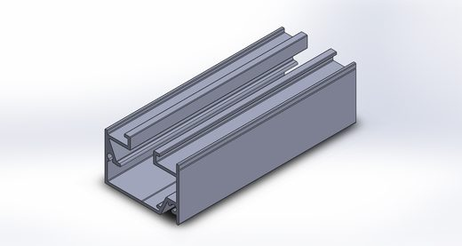
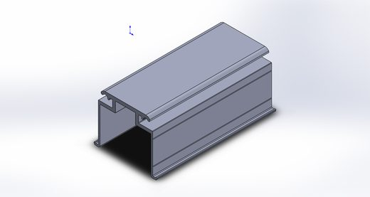
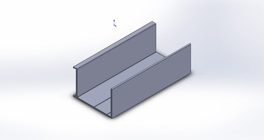
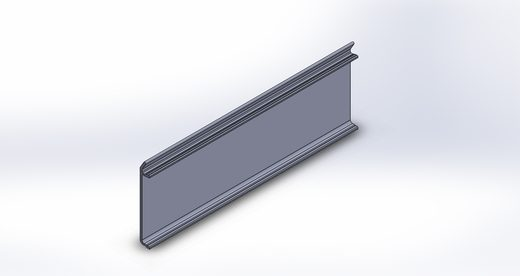
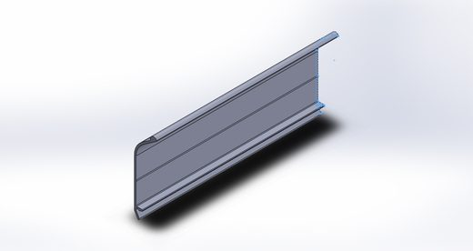
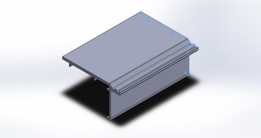
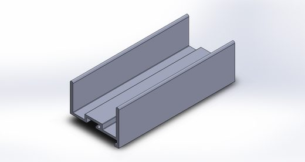
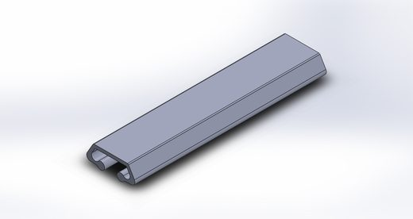
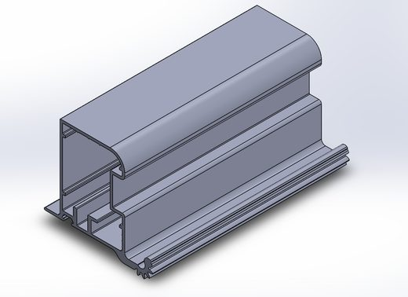
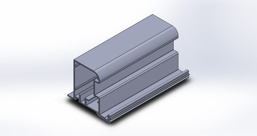
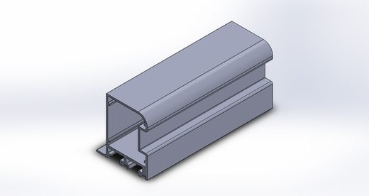
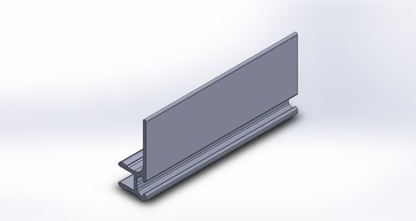
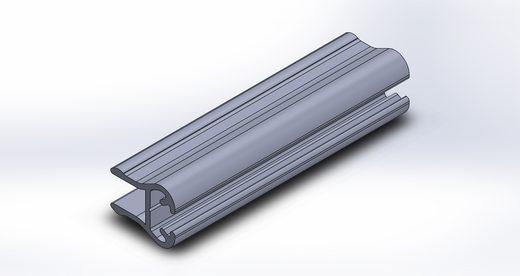
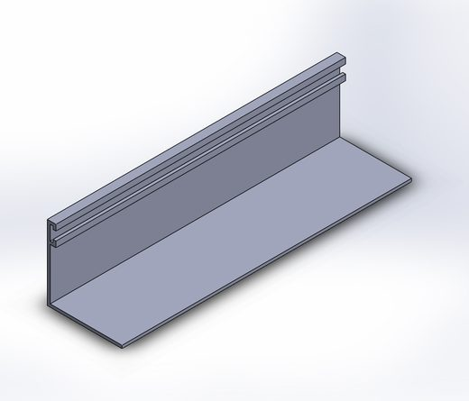
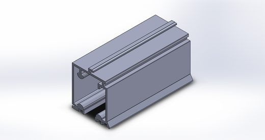
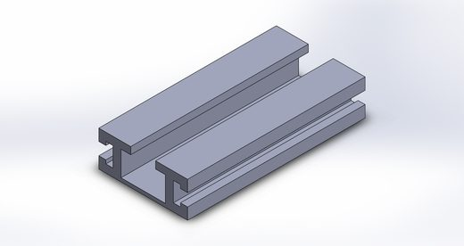
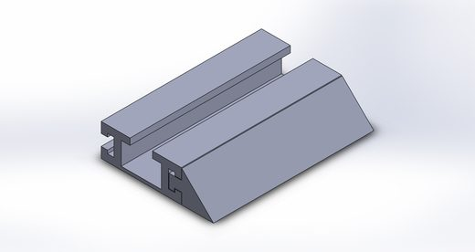
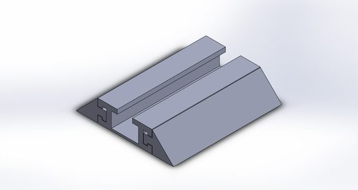
4Detalhe de montagem
a preencherSequência de montagem em elaboração
Como os perfis compartilhados com a categoria pele de vidro estão em ambos os sistemas, a montagem de base tende a ser muito similar entre os dois sistemas — a documentar em conjunto quando disponível.
5Detalhe de usinagem
a preencherEspecificações de corte e furação em elaboração
Cotas de corte e furação por perfil serão adicionadas nesta seção.